Sazkirina ferhenga rastnivîsê
Kontrola rastnivîsa kurdî
Taybetmediyeke girîng a OpenOffice.org jî kontrola rastnivîsa kurdî ye. Kontrola rastnivîsa kurdî bi hêsanî tê sazkirin û otomatîk dixebite.
Hilbijartina ferhengê
Bernameya OpenOffice.orgê veke û ji darikê amûran "Pel > Sêhrbaz > Ferhengên nû saz bike" bişopîne.
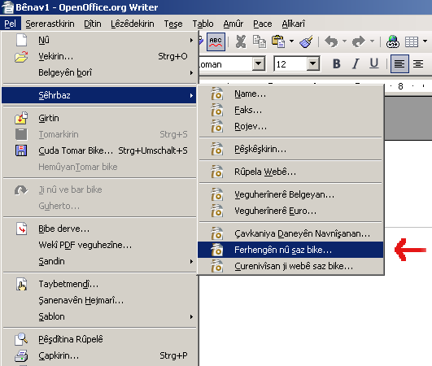Makroya DicOOo dê dest pê bike. (Dic=Dictionary=Ferheng, OOo=OpenOffice.org=Ofîsa vekirî). Ji nava zimanên DicOOo'yê kurdî hilbijêre.
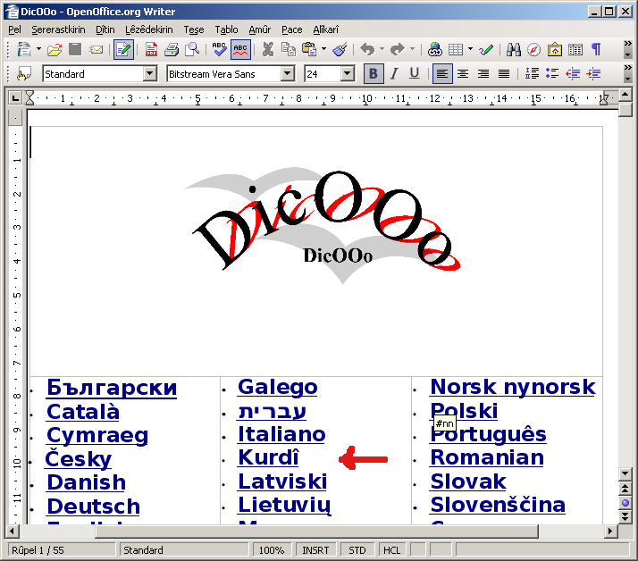"dest bi DicOOoyê bike" bitikîne.
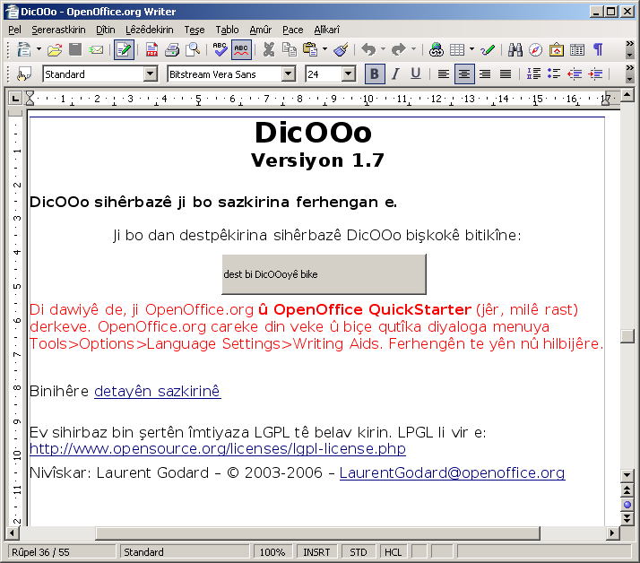"Zimanê DicOOoyê biguherîne" niha kurdî ye. "pêş >>" bitikîne.
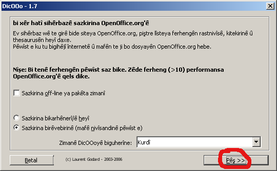"Lîsteyê bîne" bitikîne da ku lîsteya ferhengan bê barkirin.
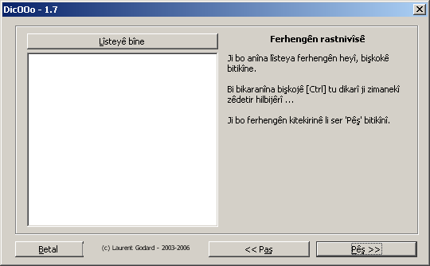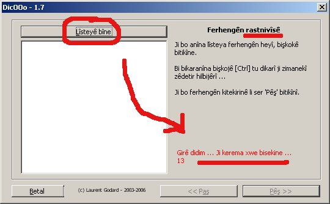
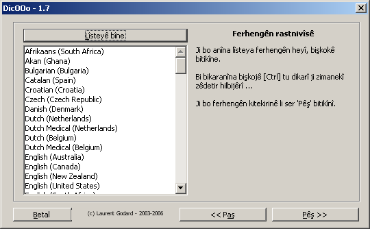
Ji lîsteyê Kurdî (Kurdish Turkey an jî Kurdish Syria) hilbijêre û here "pêş"
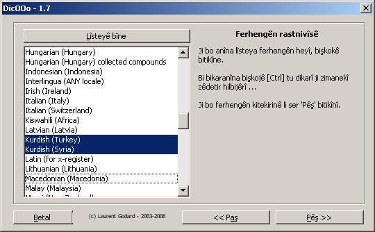Ferhenga kîtekirina kurdî hê tune, here "pêş"
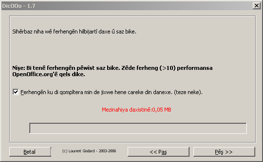
Piştî ku ferheng hat daxistin û sazkirin "dawî"yê bitikîne.
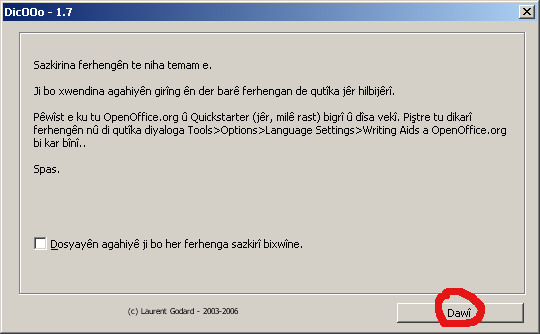Ferhenga Kurdî saz bû. Destê te sax be.
Zimanê kurdî wekî zimanê standard ji bo belgeyan
Niha ji darikê amûran "Amûr > Vebijêrk" > Language > Language settings bitikîne û ji paceya vebû zimanê Kurdî nîşan bike û bi "Temamê" biqedîne.
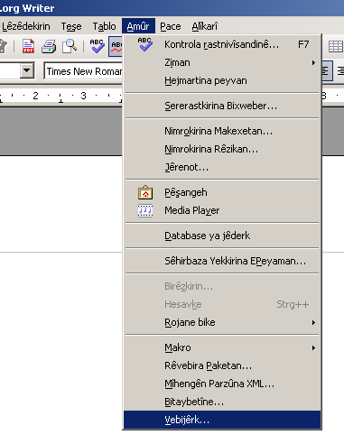
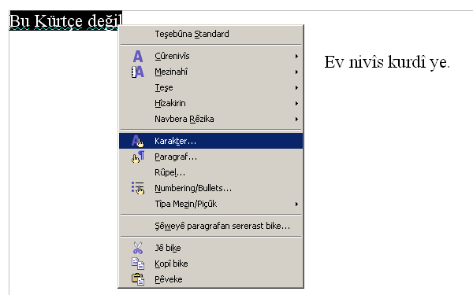
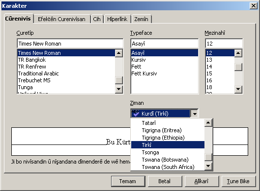
Bidawîanîna sazkirinê
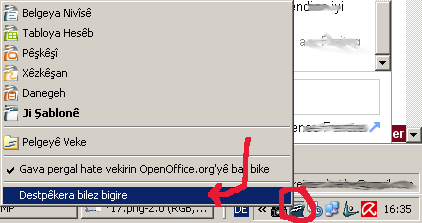Ferhenga te ya Kurdî ji bo Ooo'yê (OpenOffice.org) saz bû. Niha dest bi nivîsandinê bike. Binê peyvên çewt dê bê xêzkirin. Dema ku te li ser peyva binxêzbûyî rast tikand, dê bi awayên rast peyv bên pêşniyarkirin.
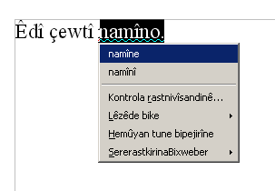Alîkariya me bike!
OpenOffice.org projeyeke verkirî ye. Her kes dikare alîkarî bike. Ji bo pêşxistina bernameya kontrola rastnivîsê jî alîkarî pêwîst e. Heke bixwazî tevlê bibî, serî li koma PCKurd bide.